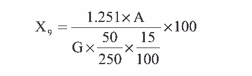

在分离铁、铝离子后的溶液中，在 pH8～9 时，铜离子与双环己酮草酰二脘反应生成兰 色络合物，用比色法测定。
1. 1+1 氨水。
2. 铜标准溶液：称取 0.3929g 硫酸铜（ CuSO4·5H2O）， 溶于水中，移入 1000mL
容量瓶中，用水稀释至刻度，摇匀，吸取上述稀释液 25mL，移入 250mL 容量瓶中，用水稀
释至刻度，摇匀，此溶液 1mL 含 0.01mg 铜。
3. 0.1%双环己酮草酰二脘（ BCO）
称取 0.5g 双环己酮草酰二脘（称准至 0.01g）加入约 50mL 乙醇，在水浴上温热，搅拌，
溶解后用水稀释至 500mL，摇匀。
4. pH8.5 氨—氯化铵缓冲溶液的配制
称取氯化铵 40g（称取至 0.01g）， 溶于适量水中加入氨水 9mL，用水稀释至 500mL。
分光光度计。
1. 标准曲线的绘制
分别吸取 1mL 含 0.01mg 铜标准溶液 0、 1.0、 3.0、 5.0、 7.0mL 于 5 只 50mL 容量瓶中，
依次加入 15mL pH=8.5 氨—氯化铵缓冲溶液及 15mLBCO 溶液，用水稀释至刻度，摇匀，
放置 5 分钟，用分光光度计，于 600nm 处，用 3cm 比色皿，以试剂空白作参比，测其吸光
度，用测得吸光度为纵坐标，相对应铜含量（毫克）为横坐标，绘制标准曲线。
2. 试样测定。
8.4.2.1 吸取测定氧化钙、氧化镁用的干过滤后滤液 15mL，移入 50mL 容量瓶中。
8.4.2.2 用 1+1 氨水调节 pH9 左右，然后加入 15mL 氨—氯化铵缓冲溶液， 15mLBCO
溶液，用水稀释至刻度，摇匀，放置 5 分钟。
8.4.2.3 于 600nm 处，用 3cm 比色皿，以试剂空白为参比，测其吸光度，于标准
曲线上查得相应的铜含量。
氧化铜的含量 X9（ %）， 按下式计算：

式中： A——从标准曲线上查得铜离子含量，毫克；
G——试样的重量，克；
1.251——铜换算为氧化铜的系数。
平行测定两结果差不大于 0.15%。
取平行测定两结果的算术平均值，作为垢样中氧化铜的含量。